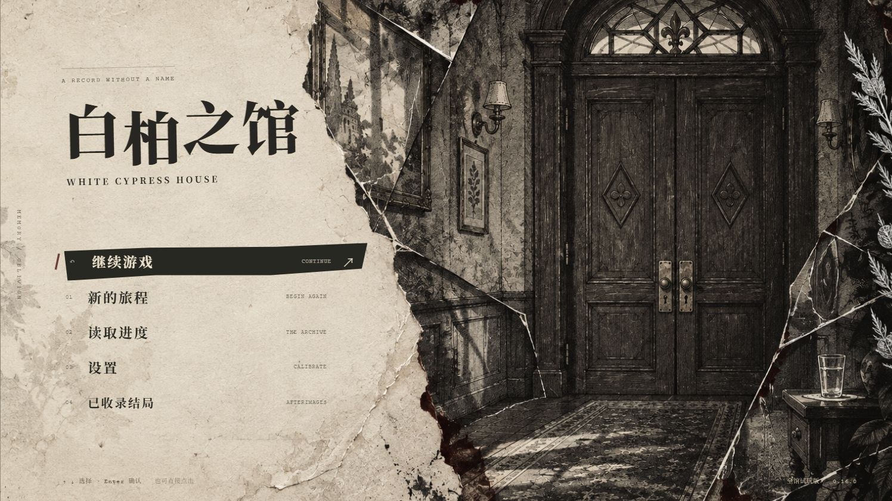

AI VIDEO PRODUCTION
OpenDramaFlow
你来讲故事，
Codex 来组织制作。
面向 Windows Codex Desktop 的开源 AI 视频生产插件。把创作 Skills、模型调用、素材版本与本地后期整合在一条流程里，从剧本走到成片。
我是褚新磊，AI 产品经理与创作者。
做 Agent 产品，也用 AI 拍故事、做游戏。
从真实需求出发，把想法推进到可以使用的那一步。
从工具的搭建，到故事的发生。
你来讲故事，
Codex 来组织制作。
面向 Windows Codex Desktop 的开源 AI 视频生产插件。把创作 Skills、模型调用、素材版本与本地后期整合在一条流程里，从剧本走到成片。

清晨，“你”发现自己在一张陌生的床上醒来，“你”环顾四周发现墙上刻满奇怪符号，门窗紧闭，无法人为打开，而床头放着一本残缺的字典和半杯清水。
“你”需要亲手转动、拼合和试验机关，从住客的动作与物件的变化中破译这门未知语言，并跟随指引一步步探索这栋诡异建筑背后的秘密。
游玩玩法的灵感来自《巴别塔圣歌》，故事背景取材自古希腊佩泰利亚金片。
在哈迪斯的殿堂，你左手边会看见一处泉水，
旁立着泛着白光的柏树（白柏）。
千万不要靠近这泉水，不要饮它的水。
你将找到另一汪泉水，自记忆之湖（Mnemosyne，谟涅摩叙涅）涌出冰冷的流水；
它的守卫就站在泉前。
你要这样宣告身份：
“我是大地与繁星天空之子，我的本源属于天穹，你们自知此事。
我干渴濒死，请快赐我来自记忆之湖的寒泉之水。”
他们便会赐你圣泉之水，
此后，你将与众英雄一同参与祭仪。
点击地面移动，点击物品观察。Tab 打开笔记，I 查看背包，Esc 暂停、保存或读取。按住 H 可以显示线索位置。
推荐使用电脑和耳机。作品含恐怖画面、追逐与闪光效果，可在设置中调整声音和动态效果。
作品包含多条人物支线和五种结局，200+张美术素材，1段开场CG，14首背景音乐。预计通关时长随探索方式而异。
“请删除与母亲有关的全部数据。”
这份申请已经通过身份与权限核验，却被一项生前条款拦住：删除时，要留下六份记录。条款还在，关联的文件却对不上了。
你是“拾光”数字遗产服务的执行审核员。查阅网页存档，搜索散落在正文里的关键词，对照照片、录音、设备与时间记录，重新找出那些被指定保留的片段。
这是一款以仿真网页和档案检索为核心的叙事解谜游戏。你需要组合证据、核对来源，并在完成复核后执行申请。游戏内提供自动保存的便签与进度；建议开启声音或佩戴耳机。
作品包含亲人离世与家庭关系相关叙事。人物、机构与事件均为虚构。
Philosophy Skills · 哲学与文学方法库
从文游创作中的人物思考与叙事需求出发，用女娲 Skill提炼思想家的分析方法。按问题选择视角，比较时保留分歧，让人物动机、价值判断与叙事讨论有据可循。
46 个独立模块，其中 21 个自制模块、25 个注明来源的上游模块。下面列出自制模块；完整合集保留上游作者署名与许可。
npx skills add jiushiaaa/Philosophy-SkillsAI 产品经理
南京财经大学 2027 届
四段 AI 产品经理实习，覆盖销售与经营分析、AI Coding 与办公 Agent、保险、K12 美育。
我关注如何把模型能力接入业务：通过用户研究明确问题，用 PRD 与可交互 Demo 验证方案，再用评测和真实反馈推进迭代。
查看完整个人介绍 ↗云梯智客｜多 Agent 协同的销售与经营分析平台 · 2026.04 - 至今
负责 AI 销售与数据分析方向的产品探索、快速验证和交付落地，将客户需求转化为 AI 技能或工作流 Demo，并在业务试用中沉淀通用平台能力。
BlueCode & BlueWork｜内部 AI Coding 工具与办公 Agent · 2025.11 - 2026.04
参与内部 AI 生产力产品矩阵建设，负责竞品研究、用户访谈与 NPS 反馈整理，推进 BlueCode 多版本迭代，并参与桌面端办公 Agent BlueWork 的 0 → 1 设计。
Skills.md，实现内置 create-skill 能力。宝单侠｜AI 保险产品 · 2025.07 - 2025.10
美术智能体｜TOG AI 教育产品 · 2025.03 - 2025.06